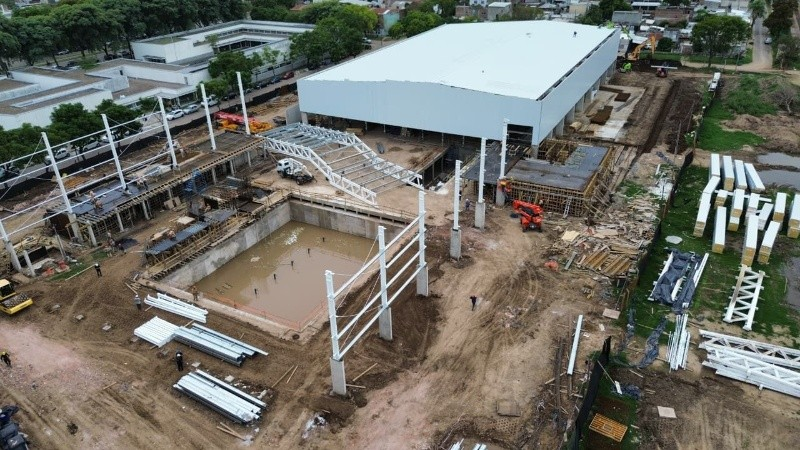

RUMBO A SEPTIEMBRE
Juegos Suramericanos: el Centro Acuático Provincial ya tiene un 60% de avance en Rosario
El gobierno provincial recorrió las obras del complejo que será sede de las competencias acuáticas en los próximos Juegos ODESUR 2026. Los detalles de una infraestructura clave para la región.

La cuenta regresiva para los XIII Juegos Suramericanos Santa Fe 2026 ya está en marcha. En ese marco, autoridades provinciales y municipales supervisaron el avance de las obras del nuevo Centro Acuático Provincial, emplazado en la ciudad de Rosario, que ya superó el 60% de ejecución.
Este complejo de alto rendimiento deportivo contará con una pileta olímpica de 50 metros y otra de saltos ornamentales, ambas diseñadas bajo los estrictos estándares de la Federación Internacional de Natación (World Aquatics). La infraestructura no solo será el corazón de las disciplinas acuáticas durante el evento de septiembre, sino que quedará como un legado fundamental para los deportistas locales.
Un hito para la infraestructura deportiva
Desde el Ministerio de Obras Públicas destacaron el ritmo sostenido de los trabajos, señalando que la instalación de los sistemas de filtrado y climatización de última generación se encuentra en su fase final. Se espera que en los próximos meses comience la prueba de llenado y calibración de los equipos.